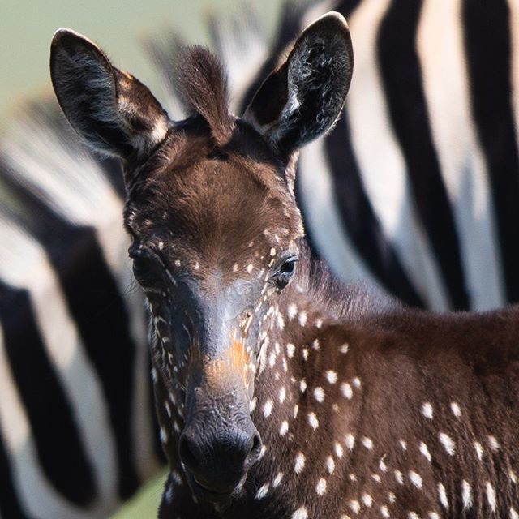

Uma zebra recém-nascida causou sensação na internet nesta quarta-feira (18). Em vez das tradicionais listras, a zebrinha nasceu com pintas pelo corpo.
O animal foi avistado na reserva Maasai Mara National Reserve, no Quênia, pelo guia Rahul Sachdev e pelo fotógrafo Antony Tira, que disse ao jornal “Daily Mail” que, à primeira vista, achou que o animal tinha sido pintado para efeitos de pesquisas de migração. A zebrinha foi apelidada de Tira, em homenagem ao fotógrafo.
A zebra tem “melanismo”, uma condição rara, caracterizada pelo excesso de melanina, que resulta em uma coloração mais escura do que o normal para a espécie.
Infelizmente, isso significa uma desvantagem para o animal, já que ele pode se tornar um alvo mais fácil para os predadores. Parmale Lemein, especialista em vida selvagem no Acampamento Matira, que fica na reserva, disse ao jornal “New York Post” que zebras com melanismo que apareceram em outros parques africanos acabarem morrendo em seis meses.